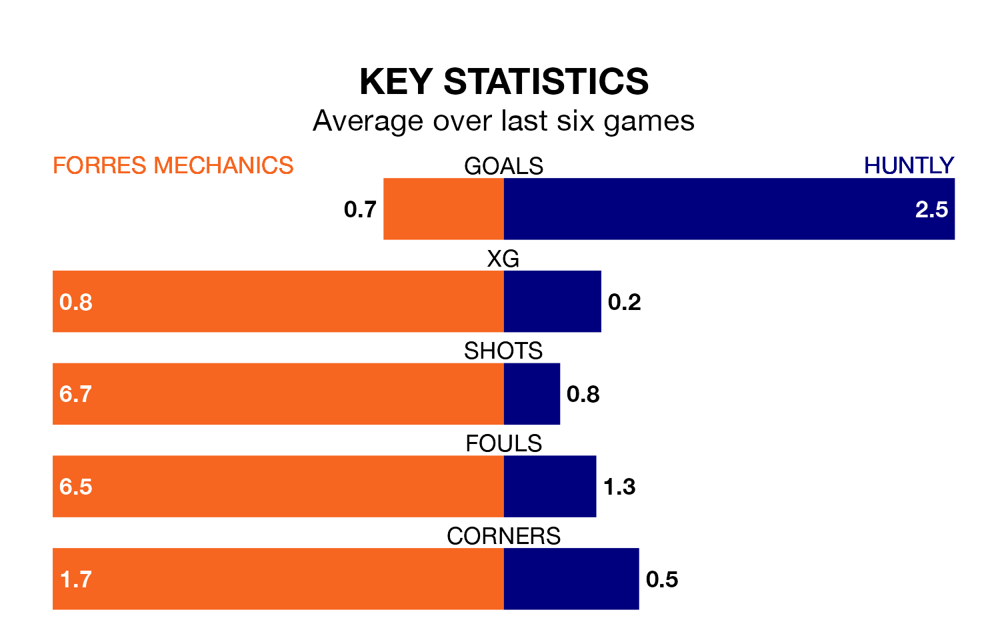

Huntly are strong favourites to take all three points despite Forres Mechanics's home advantage in Wednesday's late match at Mosset Park.
*Betting Company* are offering odds of 1.5 on Huntly sealing the win, with the visitors sitting seventh in Highland Football League table.
Forres Mechanics, who are 13th in the league and 17 points behind Huntly, are priced at 4.5 to win. A draw is set at 4.33.
With 55 goals in 20 games so far this season, Huntly are the league's second-highest scorers with 2.8 goals per game. And they are conceding at an average rate, letting in 38 goals at a rate of 1.9 per game.
Forres Mechanics, meanwhile, are below average scorers, with 1.2 goals per game, compared to a league average of 1.9. They have conceded 1.9 goals per game.
In the last 10 years, Forres Mechanics and Huntly have played each other on 12 occasions. Forres Mechanics won 10 of them and Huntly two.
On average, Forres Mechanics scored 3.6 goals and Huntly 0.9 in those matches.
Their last meeting was on March 4, when Huntly won 2-1 at home.
The hosts are in bad form in Highland Football League, with one win and a draw from their last six games.
With two wins and a draw over that period, the away side's form is better – they have taken seven points from 18, compared to Forres Mechanics's four.
Forres Mechanics's last match was on January 13, a 2-0 loss against Deveronvale.
Huntly beat Deveronvale 5-1 last time out, on Saturday.
Updated: 13:20 (UTC), 29/01/24